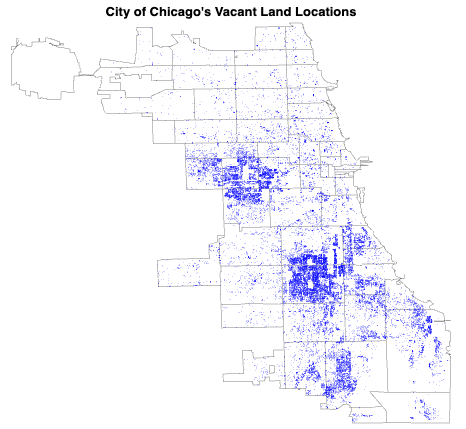
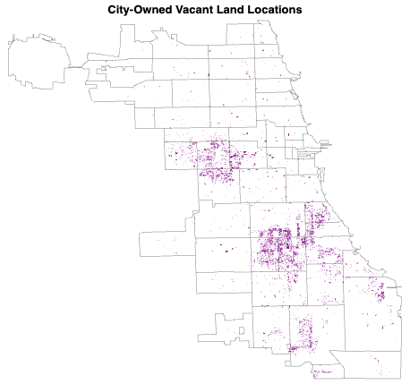

Understanding Chicago’s Vacant Lands: Patterns and Socioeconomic Associations
Group Member: Section 3 - Liujun Hua (huaregina), Katika Klinkaew (katikaklinkaew), Liling Shen (SherlynLS)
Research questions
• What patterns characterize the spatial distribution of vacant lands in Chicago?
• How do socioeconomic characteristics, population dynamics, and environmental factors interact in shaping the prevalence and impact of vacant lands in Chicago?
Methodology and Data Source
Primary data sources include 1) city-owned vacant lands data from the City of Chicago (COC), 2) parcel data from the Cook County Assessor’s Office (CCAO), and 3) socioeconomic and demographic data from the Chicago Data Portal and related institutions. According to the COC, if a vacant lot is not listed in the portal, it can be assumed not to be owned by the City. After cross-referencing COC and CCAO data, and other land data (like the Institute for Housing Studies at DePaul University, and ChiBlockBuider), we validated data accuracy and ensured consistency in the spatial distribution of different land types.
After merging and deduplicating the primary land datasets, we performed data cleaning, including geospatial and land status verification, NA value handling, and key column formatting. Geographic identifiers such as zip codes and community area names were harmonized, and grouping operations were conducted to analyze relationships with socioeconomic and demographic factors. To optimize integration and performance in the Shiny app, the data was standardized to GeoJSON format.
Geospatial analysis is performed using spatial mapping and clustering techniques to uncover patterns in the spatial distribution of vacant lands. Finally, interactive visualization tools, including filters, tooltips, selectors, and toggles, are utilized to enhance data exploration and presentation.
Obstacles
• Data gaps: The available open data on vacant lands is limited to recent records (July 2023) and primarily focuses on city-owned properties. Historical data was inaccessible despite attempts to obtain it via Chicago Cityscape and direct communication. This restriction prevented temporal analysis and the identification of long-term trends or patterns.
• Inconsistent geographic identifiers: The datasets presented significant variation in geographic references, including zip codes, community area names, and different geometry formats. This lack of uniformity created challenges for data integration. To address this, we converted latitude and longitude into geometric data. Spatial joins were then employed to map the corresponding zip codes to the exact locations of crime, enabling a seamless merge with demographic data.
• Common indicator alignment challenges: Datasets with common indicators couldn’t be found directly. To establish common metrics, we combined datasets through spatial joins or identified acceptable proxies. For example, crime rates were derived by merging crime reports with population data, and business density was approximated using the number of newly issued business licenses.
• Data format and performance issues: Raw data was provided in various formats (GeoJSON, CSV, shapefiles, and text files), with some datasets exceeding 1.3 GB, leading to slow loading times. To address this, we grouped data during analysis and converted final datasets into GeoJSON for optimized readability and visualization.
• Socioeconomic data limitations: The focus on a small geographic area, Chicago, and the use of fine-grained spatial divisions posed challenges in accessing corresponding socioeconomic data. For variables like housing prices, land values, and transaction activities, only aggregate data at the city or Illinois state level was available, limiting deeper exploration of the relationship between vacant lands and property values.
Plotting and Policy Implications
Static Plots
 
From the figures above, it is evident that vacant lots are predominantly concentrated in the west and south sides of Chicago. Analyzing ownership data reveals that 75% of these lots are privately owned, while the City of Chicago owns the remaining 25%. Furthermore, although vacant lots are primarily visible in the west and south, zip codes along CTA lines tend to have a higher density of vacant lots.
Englewood and West Englewood are the top two community areas in Chicago with the highest number of vacant lots, with Englewood having over 3,500 lots and West Englewood nearly 3,000. The bar chart on the right illustrates that in the 15 community areas with the most city-owned vacant lots, the average value of these lots is relatively low, with most valued below $20,000.
The figure below reveals that 4 of the top 5 zip codes with the highest number of vacant lots are predominantly Black communities, with the remaining one being predominantly Latinx. This highlights a significant issue, as the concentration of vacant lots is disproportionately located in minority communities.
Shiny App
Our Shiny app features interactive choropleth maps displaying demographic and socioeconomic data, including crime rates, income levels, unemployment, business density, and population. Users can select the dataset to display using a drop-down menu. An additional key feature is a toggle that activates a scatterplot overlay of vacant lands. When enabled, users can adjust the scatter point size with a slider and choose to display city-owned lots, non-city-owned lots, or both. The app’s primary purpose is to visualize the relationship between socioeconomic factors and the distribution of vacant lots on a map.
Policy Implications
The Shiny app analysis reveals that the presence of vacant lots is negatively correlated with income levels and business density, while showing a positive correlation with crime rates and unemployment. These findings indicate that communities with a high concentration of vacant lots face compounded socio-economic challenges, emphasizing the need for targeted urban planning and redevelopment initiatives to drive positive change.
Our analysis shows that the majority of Chicago’s vacant lots are owned by entities other than the city. To address this, the city could consider introducing programs or incentives that encourage private owners to effectively utilize their vacant land, fostering community development and economic growth.
We also found that vacant lands tend to cluster near CTA lines, highlighting new opportunities to leverage transit assets to attract investment to transit-rich but underinvested areas. For example, these vacant lands could be utilized to build community convenience facilities.
Future Work
The project currently relies on recent records (July 2023); with access to historical data, we could conduct temporal analyses to explore long-term trends and evolving spatial patterns.
Expanding data sources would allow for a more comprehensive examination of the interaction between vacant land distribution and socioeconomic characteristics, including variables such as household income, median house prices, land use, unemployment rates, and housing market investments.
A case study could focus on the top five communities with the highest number of vacant lots, as well as those near transit hubs (e.g., within ½ mile of a CTA train station), to analyze underlying causes and propose targeted improvement strategies.
Local Moran’s I cluster analysis could be applied to identify spatial clusters of vacant lands and assess the significance of these clusters in relation to surrounding socioeconomic factors. By analyzing the spatial mean center of vacant lands over time, we could investigate geographic shifts and their implications for urban planning and policy.
Regression models could be implemented to quantitatively analyze the relationship between vacant lands and various socioeconomic indicators.